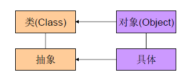
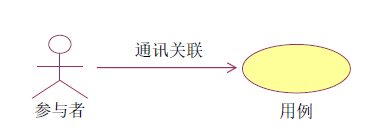
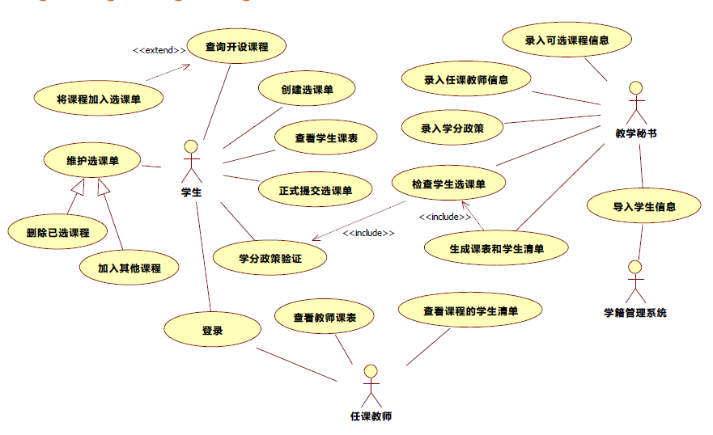
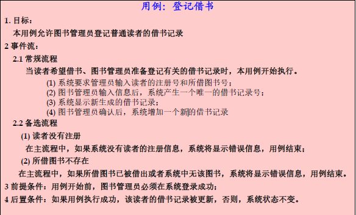
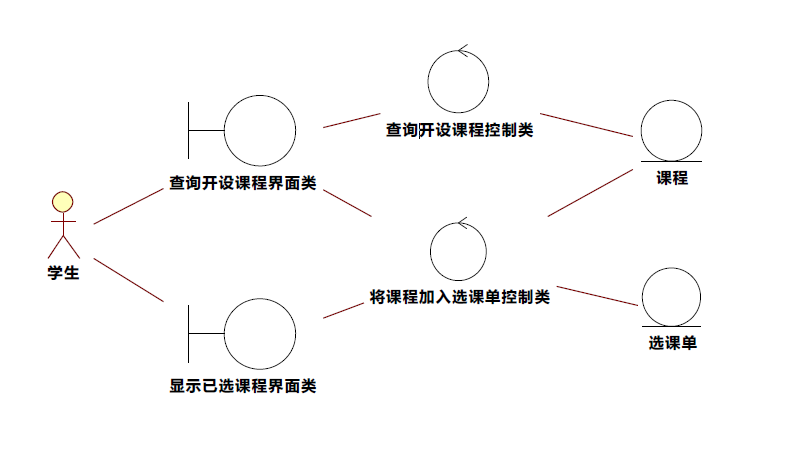
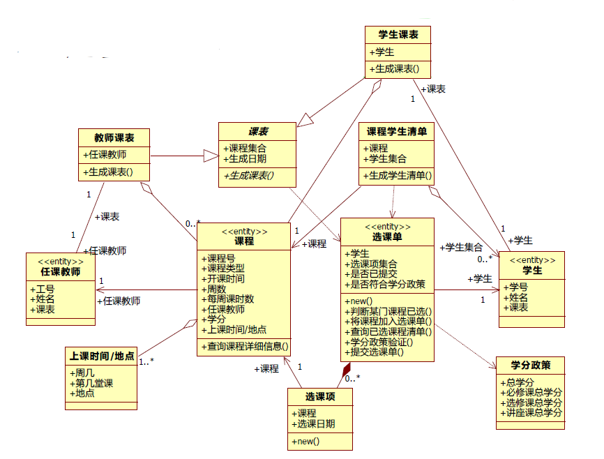
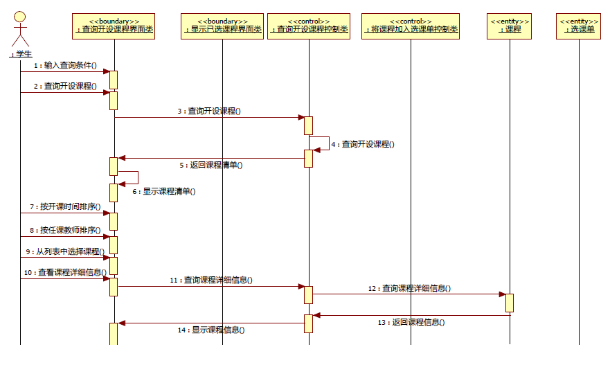

本文主要根据课程《软件工程》所学，介绍了OO设计的思想以及常采用的流程，希望此文能对你的OO开发小有裨益。
1. 结构化程序开发
结构化分析方法 ：将待解决的问题看作一个系统，从而用系统科学的思想方法（抽象、分解、模块化）来分析和解决问题。
结构化分析核心思想 ：自顶向下的分解
结构化程序开发的特点 ：
- 软件作为处理数据的流，将之定义未一系列步骤构成的算法；
- 每一个步骤是带有预定输入和特定输出的一个过程；
- 所有步骤串联在一起构成贯穿于整个程序的控制流，最终产生具有静态结构的体系结构；
- 结构化软件 = 算法 + 数据结构
结构化方法的缺陷：
结构化方法以功能分解的数据流为核心，但是需求在项目初期可能就不明确而完整，加之需求在整个项目过程中可能始终发生变化，在不断变化中，系统结构最终奔溃。
2. 面向对象的程序开发
在结构化开发模式中，优先考虑的是过程抽象，而在面向对象开发模式中优先考虑的是实体（问题范围内涉及的对象）。将系统看作是对象的集合，每个对象包含一组描述自身特性的数据以及在数据上的操作。将系统中的主要实体作为系统的发起点，主要考虑对象的行为而不是必须执行的一系列动作；
- 对象是数据抽与过程的综合；
- 系统的状态保存在各个数据抽象所定义储中；
- 控制流包含在各个数据抽象中的操作内；
- 消息从一个对象传送到另；
- 算法被分布到各种实体中。
- 面向对象的系统 = 对象 + 消息
面向对象模型更接近于问题本身，也就是更接近于人类所处的现实世界。对于庞大的系统可以反复细化，分解为多个对象，直到达到可以实现的程度。
3. 类和对象
对象 ：用来描述客观事物的实体，是构成系统的一个基本单位，由一组属性以及作用在这组属性的操作构成。
类 ：具有系统属性和操作的一组对象的集合，它为属于该类的全部对象提供了统一的抽象描述。
类是一个抽象的概念并不存在，而对象是类的一个实例。

3.1 有关类的几种思想
- 封装(Encapsulation)：将对象的属性和操作作为一个独立的单元，并且尽可能的对外界隐藏对象的内部实现细节。因为对外界其他对象，只需要了解对象呈现的外部行为而不需要知道内部是如何实现的。这样做可以保护对象，避免被误用。
- 接口(Interface)：描述一个类的一组外部可用的属性和操作。但是，并不去实现具体的操作，体现了接口和实现的分离，也做到了信息隐藏。一个类继承一个接口，则必须要实现接口中所定义的所有属性和方法。
- 继承(Inheritance)：一个子类继承了父类，那么就拥有了父类的全部属性和操作，并且还可以有自己的属性和方法。
- 多态(Polymorphism)：同一个操作对应用不同的对象上有不同的解释，产生不同的执行结果。
3.2 对象之间的关系
- 继承/泛化：表示事物的”一般-特殊的关系”,例如”学生”是一个一般的类，而”研究生”也是学生，具有学生的一般属性与方法，但是研究生也有别的属性。所以可以说”研究生类”是”学生类”的继承/泛化。是一种
is a kind of的关系。 - 组合：一个对象是另一个对象的组成部分，而且整体与部分在具有同样的生命周期。比如说”书本”和”纸页”的关系。是一种
is part of的关系。 - 聚合：也是一个对象是另一个对象的组成部分，但与组合关系不同的是，聚合关系的两个对象在生命周期上是独立的。比如说”班级”和”学生”的关系。是一种
owns a的关系。 - 关联：表示对象之间长期的静态联系，通过对象的属性来建立连接关系。比如说”教师”和”学生”之间是关联关系，教师类中会有学生列表这一属性，而学生类中会有教师这一属性。是一种
has a的关系。聚合也是特殊的关联关系，只不过关系的强度更大。 - 依赖：依赖关系是一种动态的、临时的通信连接。通常类的依赖由于一个类是另一个类的某个操作的参数或者一个类在另一个类的操作种被使用而引起的。是一种
use a的关系。
3. 面向对象分析
面向对象的分析模型通常由三个独立的模型构成：
- 功能模型：从用户角度出发获取功能需求，建立用例模型。
- 静态结构模型：分析系统的对象，描述系统的概念实体，用类图（分析类图和领域类图)表示。
- 动态结构模型：描述对象之间的交互行为，用状态图表示。
此文从一个剪切后的简单的学生选课系统来做说明的案例。具体的文档如下：
- 教学秘书需要录入可选课程信息、任课教师信息、学分政策，并从学籍管理系统中导入学生信息；
- 教师登录进入系统，查询本学期所开设课程清单，并选择自己所承担的课程；
- 学生登录进入系统，查询本学期可选课程的清单，并创建自己的选课单，将某些课程加入到选课单中；学生可对选课单进行维护，包括加入其他课程、删除已选课程等；
- 学生也可对选课单中包含的数据进行学分政策验证，判断所选课程是否满足学校要求；
- 在规定时间之前，学生将选课单做正式提交；
- 教学秘书检查每个学生的选课单，若不符合学分政策，退回重选。否则，根据所有学生提交的选课单，生成课表和每门课程的学生清单；
- 教师可查看自己承担课程的课表与学生清单，学生可查询自己的课表。
3.1 功能模型建立
功能模型主要是在分析系统的业务范围、业务规则和业务处理过程，确定系统的责任、范围和边界，确定系统的需求。在分析中需要着重对系统与外部的用户和其他系统的交互进行分析，确定交互的内容、步骤和顺序。在敏捷开发中，需求被表述为一组用户故事, 在OO分析中，需求被表述为一组用例,二者暂且可看作是等价的。
3.1.1 用例（Use Case)
用例：表示系统所提供的服务或可执行某种为，定义了系统是如何被参与者所使用的，描述为提供某一完整功能而与系统之间发生的段“对话”。
用例模型主要由以下元素构成：
- 参与者 (Actor) ：存在于被定义系统外部并与该发生交互的人或其他统，代表系的使用者或环境。
- 用例
- 通讯关联 (Communication Association)：用于表示参与者和例之间的对应关系，它表示参与者使用了统中的哪些服务 (用例 )、系统所提供的服务 (用例 )是被哪些参与者所使用的。

3.1.2 用例建模的基本过程
识别并描述参与者（actor）
参与者通常可从谁使用此系统、谁维护此系统、该系统需要与其他系统交互吗等方面来识别出。识别用例，并给出简要描述
根据参与者来确定具有哪些用例，主要是看各参与者是如何使用系统的。比如说，参与者使用系统执行了哪项任务、是否会在系统中增删改查某些数据、是否会将外部的某些事件通知给该系统。用例必须是有某一个参与者发起的。识别参与者与角色之间的通讯关联
通讯管理主要就是查看参与者如何支配系统完成某项任务，需要什么消息传递。给出每一个用例的详细描述
单纯的用例图不能描述完整的信息，还需要用文字来描述某些具体的信息。比如主要描述用例的事件流，说明用例如何启动，用例在不同的事件可选择执行的方案。事件流分为常规流和备选流。常规流描述该用例最正常的一种场景，系统执行一系列活动步骤来响应参与者提出的服务请求。备选流则负责描述用例执行过程中异常的或偶尔发生的一些情况。细化用例模型
一般用例图中，只需表述参与者与用例之间的通讯关联。除此，还可描述参与者与参与者之间的泛化关系，用例与用例之间的包含、扩展、泛化关系，利用这些关系来调整已有的用例模型，把一些公共的信息抽取出来复用，使得模型更易于复用。
下图为针对上文已给学生选课系统文档建立的用例图：

{kind=link}
下面为”登记借书”这一用例的用例描述

{kind=link}
3.2 静态结构建立
3.2.1 识别分析类
分析类是一个概念层次上的内容，直接与应用逻辑相关，而不关注与技术实现的问题。识别对象和类，这是从现实世界到概念模型的过程，抽象是面向对象分析的基本原则。
主要有三种类型：
边界类 ：描述系统外部的参与者与系统之间的交互，但不是描述窗口组件等界面的组成元素。设置边界类的目的是将用例的内部逻辑与外部环境进行隔离，使得外部的变化不会影响到内部的逻辑划分。比如用户交互、系统接口、设备接口等。通常一个参与者与一个用例之间的交互或通信关联对应一个边界类。
控制类 ：描述一个用例所具有的事件流的控制行为，本身并不处理具体的任务，它负责接收边界类的信息，并将其分发给实体类。控制类实现了对用例行为的封装，将用例的执行逻辑与边界和实体进行隔离，使得边界类和实体类具有较好的通用性。控制类与用例存在着密切的关系，它在用例开始执行时创建，在用例结束时取消。一般来说，一个用例对应一个控制类。有些事件流逻辑结构十分简单，也可不必使用控制类。有些事件流逻辑相同，也可复用相同的控制类。
实体类 ：描述必须存贮的信息及其相关行为，是用例中的参与对象，通常对应现实世界中的”事物”。可在用户需求中通过名词驱动的来识别实体类，判断一个名词是否是实体类的标准是系统是否需要管理该名词所拥有的信息以及操作。但是需要注意的是 actor 作为外部参与者，除非系统需要在各用例中管理和维护该角色的信息(不是指ID和密码)，否则只需将其作为 actor，无需作为实体类。
3.2.2 描述分析类的属性和操作
对每一个描述类确定所需的各数据，可从需要接收的数据、反馈的数据、基本属性来确定所需属性。之后再细化属性的名称、类型、缺省值、可见性等。将用例分配到相应的分析类之后，从用例出发，系统的一些分析类具有的方法也可确定下来。
一般各分析类对应的操作如下：
边界类的操作
- 提供给用户的、可在ui上进行的各类操作；
- 对从控制类返回的数据进行各类临时处理而进行的操作；
- 提供给其他系统的api；
控制类的操作
- 对从边界类接收到的数据进行各类临时处理而进行的操作；
- 向实体类所发出的调用操作；
- 对从实体类接收到的数据进行临时处理而进行的操作；
实体类的操作
- 对属性进行crud的操作；
- 对状态进行更新的操作；
- 辅助操作；
在这之后，可根据用例，描述一个对象的状态如何因某个对象的操作而改变，从而建立 uml 状态转移图。
3.2.3 建立类之间的关系
类之间的关系针对实体类按照实体类的属性和方法确定类间关系，上文已经讲过了类之间的五种关系。对象和类是现实世界中的事物的抽象，它们之间的联系也要从分析现实世界事物的各种真实的联系中获得。
3.2.4 绘制类图
两种类图：
分析类图：描述各边界类、实体类、控制类之间的关联关系，无需刻画属性与操作集;
领域类图：可以不包含边界类与控制类，侧重描述各实体类之间的五种关系，需要给出详细的属性与操作集合。
选课系统的分析类图（部分）：

{kind=link}
选课系统的领域类图

{kind=link}
3.3 动态结构建立
动态模型可以使用时序图和协作图来描述：
- 时序图：列出启动该用例的参与者，列出启动该用例时参与者使用的边界对象，列出管理该用例的控制对象，之后根据该用例描述的流程，按时间顺序列出分析类之间进行消息访问的序列。每个用例都应该对应一张时序图。
- 协作图：协作图与时序图均显示对象间的交互，时序图强调交互的时间次序，时序图强调交互的空间结构。
选课系统的时序图（查询开设课程用例）：

{kind=link}
Reference
- 软件工程课程讲义，王忠杰，HIT
本文案例所有模型图，皆来源于课程讲义
请多多指教！